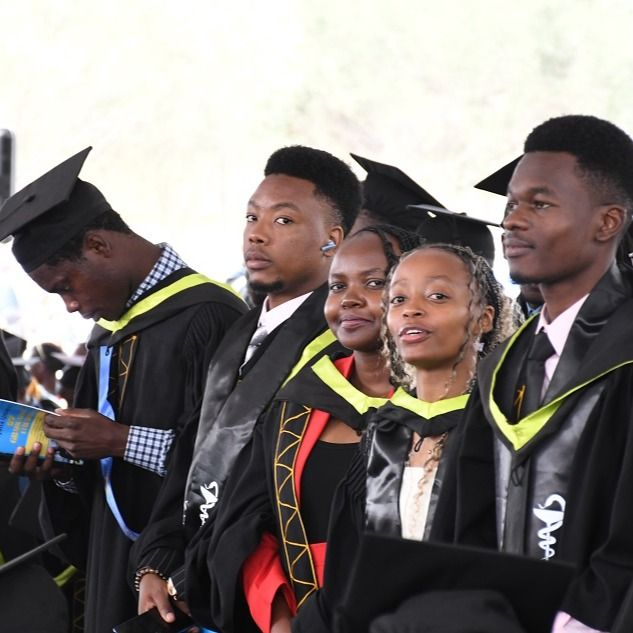
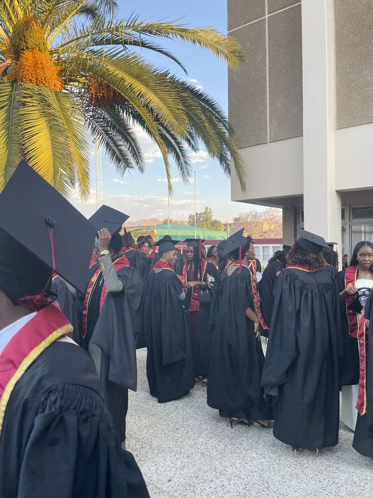
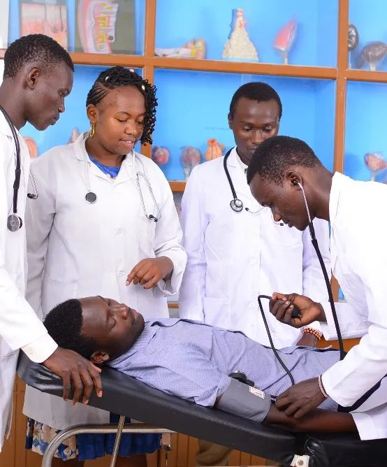

Highest illustrative support

LEARN.
RISE.
BUILD.
RISE.
BUILD.
YOUR AMBITION. OUR SHARED FUTURE.
Your next chapter
starts with education.
Talent is everywhere. Opportunity should be too. Explore a bursary concept designed around students in universities, TVET colleges and polytechnics.
2,500+ TVET students, 9,762+ polytechnic students and 15,000+ university students across the nation have already applied.
We do not choose who to give. We value every student. No tribalism. No favouritism. No one is left behind.
Proposed support from KSh 5,000 to KSh 20,000
01 / EDUCATION OPENS DOORS01 / 03
05Proposed funding bands
20,000 KShMaximum illustrative award
University, TVET & polytechnicStudents who can apply
Your ambition deserves a future.
A FAIRER PATH FORWARD
Your circumstances
shouldn’t define
your ceiling.
Behind every student is a story: a family making sacrifices, a dream taking shape, a community waiting for its next teacher, engineer or entrepreneur.
This concept puts financial need at the centre of university support. Keep learning. Keep showing up. The future you are working towards matters.
SUPPORT MATCHED TO NEED
One ambition.
Five funding bands.
Enhanced illustrative support
Mid-level illustrative support
Additional illustrative support
Entry illustrative support
Your amount is assigned automatically
Apply bursary ↗The system matches the funding band entered in your application to the proposed bursary amount. You cannot choose an amount.
CLEAR STEPS. LESS UNCERTAINTY.
Your application, made simpler.
Check your fit
Open to students enrolled at a university, TVET college or polytechnic.
Tell your story
Select your institution, study year, band and circumstances using sample details.
Review carefully
Check the information and preview an illustrative award before finishing.
Preview review status
See your system-assigned amount and an under-review confirmation preview.

FOR THE DREAM YOU HAVEN’T GIVEN UP ON
“Your education can change
your life. Your courage can
change your community.”
Take the next step. Build the future, one semester at a time.
Apply bursary ↗
THE FUTURE STARTS WITH YOU
Learn today.
Lead tomorrow.
Every lesson is a step towards the person your community needs.

TURN KNOWLEDGE INTO POSSIBILITY
Build the skills.
Shape the future.
Great ideas begin with curiosity—and grow through education.

YOUR NEXT CHAPTER
A degree is a milestone.
Your impact is the journey.
Carry your knowledge beyond the classroom. Open doors for others.